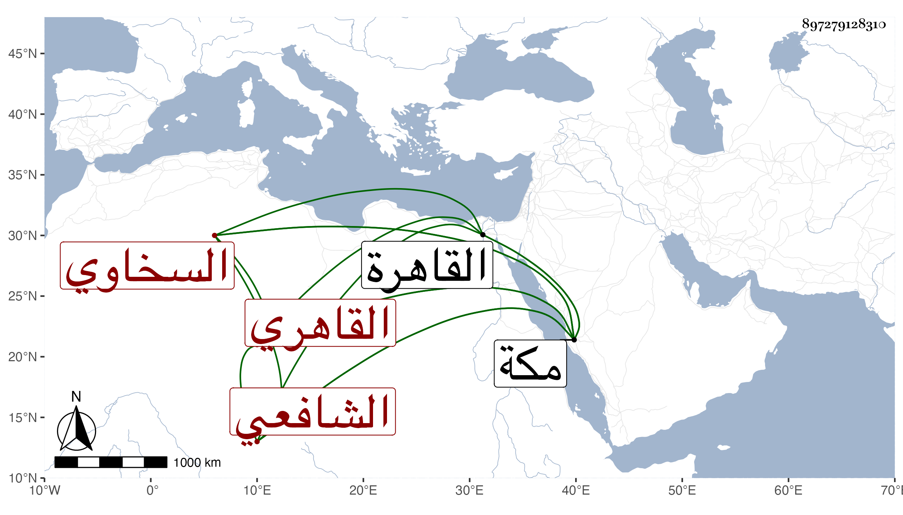

0902Sakhawi.DawLamic.ITO20230111-ara1.EIS1600.897279128310
Biography ID: 897279128310
116
محمد بن عبد القادر بن عبد الرحمن بن محمد بن أبي بكر بن عثمان بدر الدين السخاوي الأصل القاهري الشافعي الماضي أبوه وجده وجد أبيه وهو ابن أخي . ولد في ذي الحجة سنة أربع وستين وثمانمائة بسكننا الشهير ونشأ فحفظ القرآن وبعض المنهاج وسمع على الكثير خصوصا حين كان معي بمكة في مجاورتين وجاور مع أبويه حين كنا جميعا بمكة في سنة إحدى وسبعين ، ثم حج بانفراده في سنة ست وثمانين فكانت حجة الإسلام وجاور التي تليها ورجع معي في موسمها فوصلنا القاهرة في أول سنة ثمان وجلس كأبيه للتكسب فتميز في البيع والشراء بسوق الغزل مع عقل وسكون وأدب وذوق وفهم ومحبة في الفضلاء ورغبة في سماع مذاكرتهم وإقبال على شأنه ثم أقبل على الاشتغال وقرأ علي في الفقه وفي كتابي المقاصد الحسنة ومسند الشافعي وكذا قرأ العربية مع بعض الفضلاء وفهمها ، وممن قرأ عليه فيها السراج معمر وأتقن مع غيره شرحه للقطر والسيد عبد الله الأيجي قرأ عليهما في شرح عمه للقواعد وأكمله مع شرح الألفية وغيرهما من كتب الفن وغيره على الشهاب المنزلي وسمع عليه في الفقه كثيرا من الإرشاد لابن المقري ولو تفرغ لذلك لما سبقه غيره ، وقد أثكل أمه في مجاورة تلي المشار إليها ثم والده بعد رجوعه منها وتجرع ألم فقدهما عوضه الله وإياهما خيرا .
